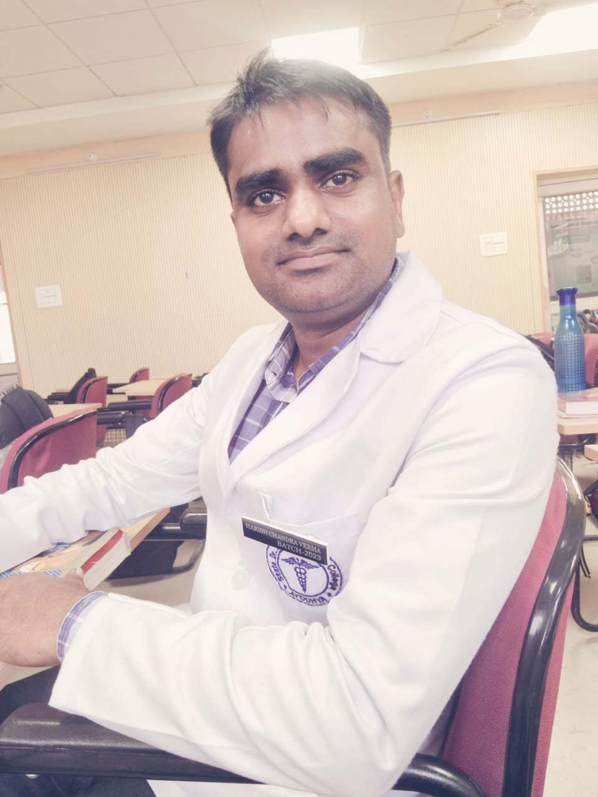
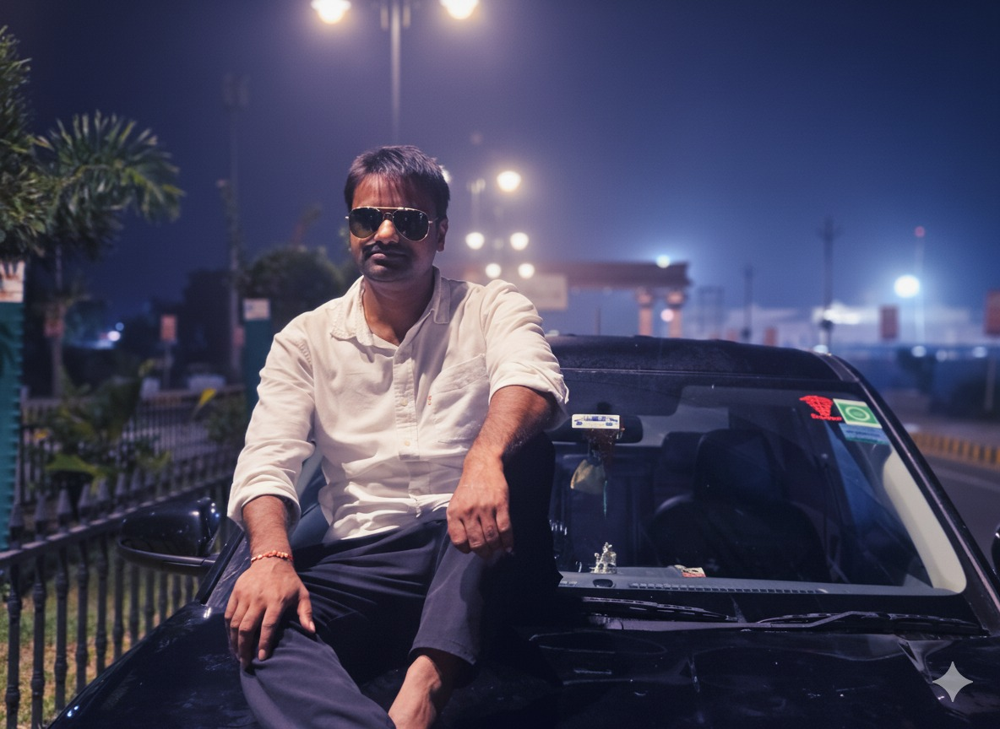
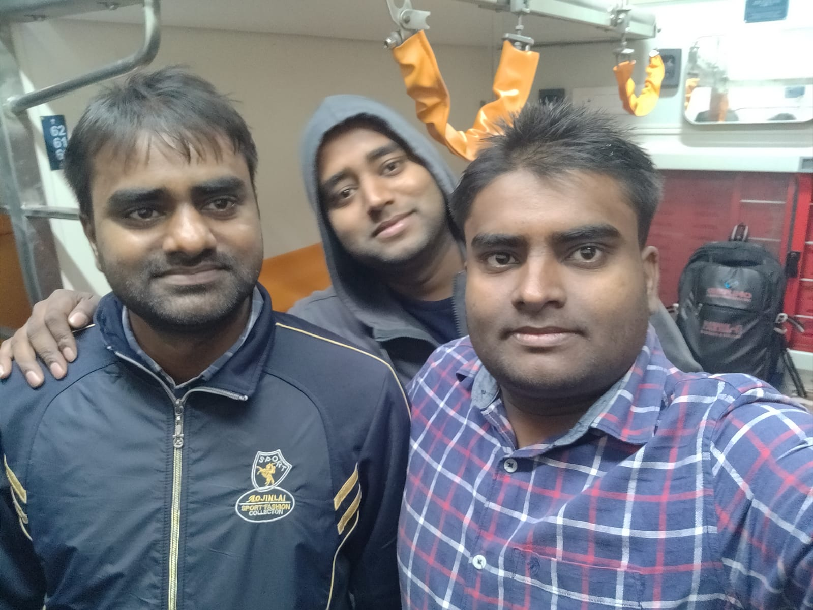
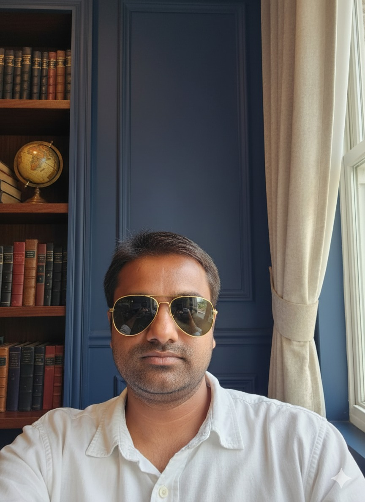
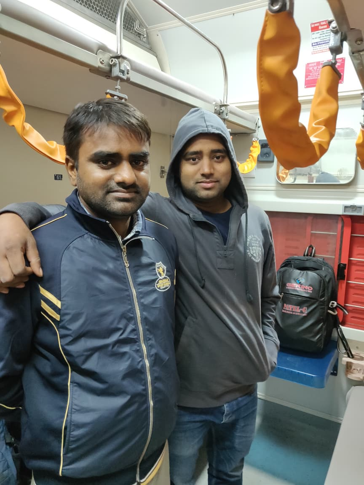

The kid who checked everyone's pulse
Before textbooks, there was curiosity — the kind that asks "are you okay?" and actually waits for the answer. That habit never left him.
MBBS · BATCH 2023 · STATE DR. R.H. MEDICAL COLLEGE, AYODHYA
My big brother. Long before anyone called him "Doctor," he was already the one everyone in the family called first.
Case history
Before textbooks, there was curiosity — the kind that asks "are you okay?" and actually waits for the answer. That habit never left him.
Batch of 2023, State Dr. R.H. Medical College, Ayodhya. Nervous hands, a borrowed stethoscope, and a name badge that finally matched the effort.
Fever at 2 a.m., a worried parent, a cousin's exam stress — he still picks up. Some things a degree doesn't change, it just makes official.
Field notes





You spent years learning how to take care of strangers. I got the easier job — I just had to grow up watching you do it. Proud doesn't cover it, but it's the closest word I've got. Congratulations, Doctor.
— Your brother